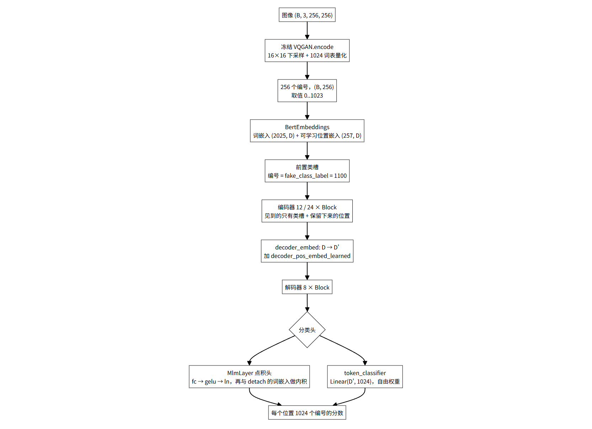
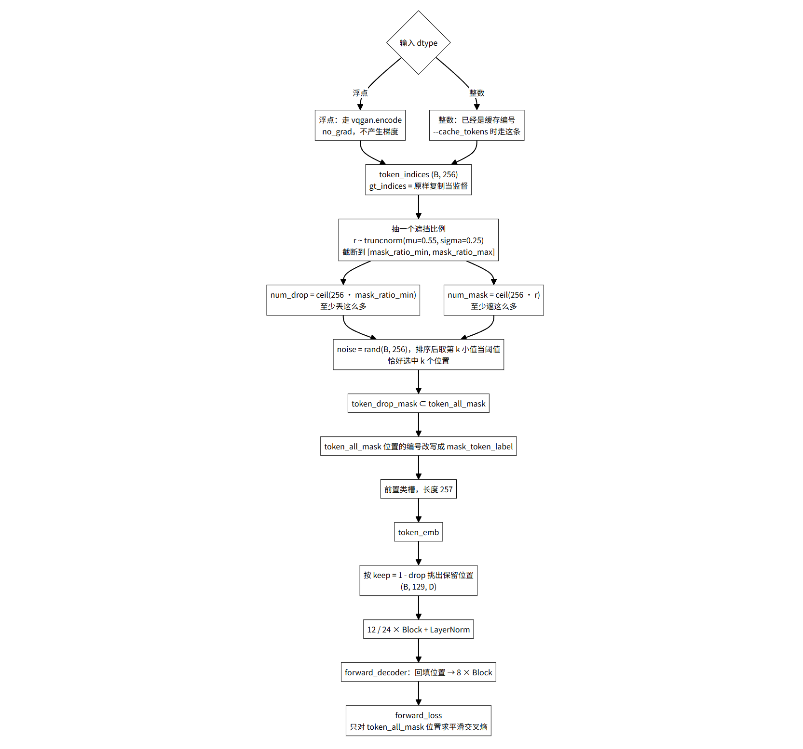
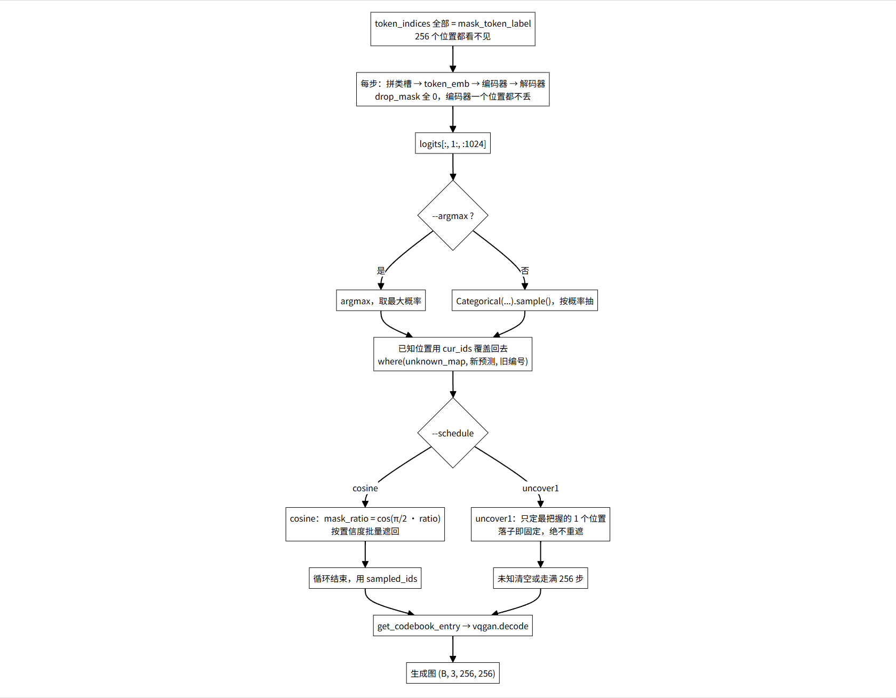
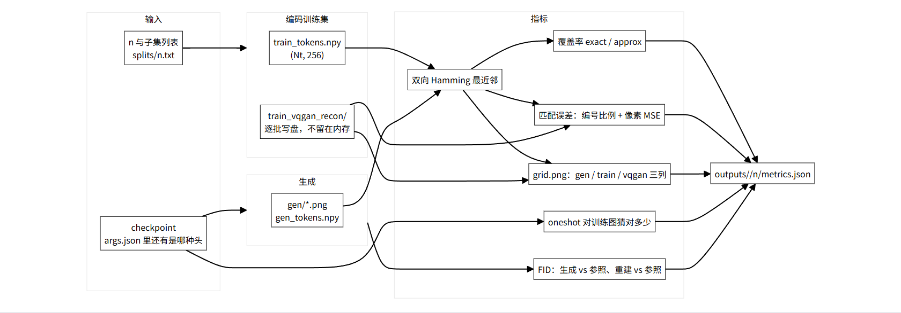
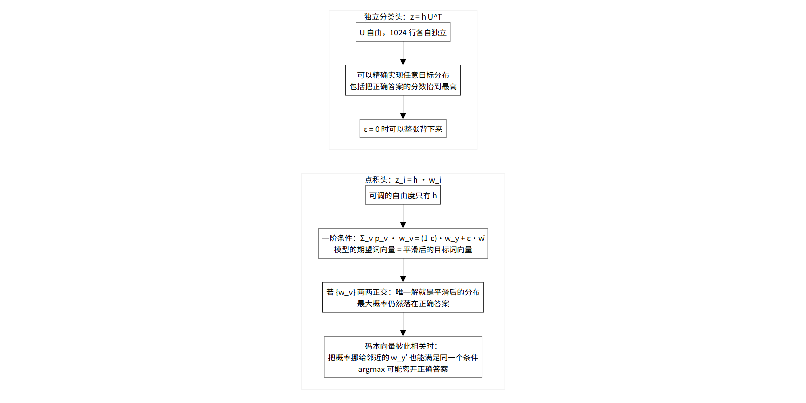
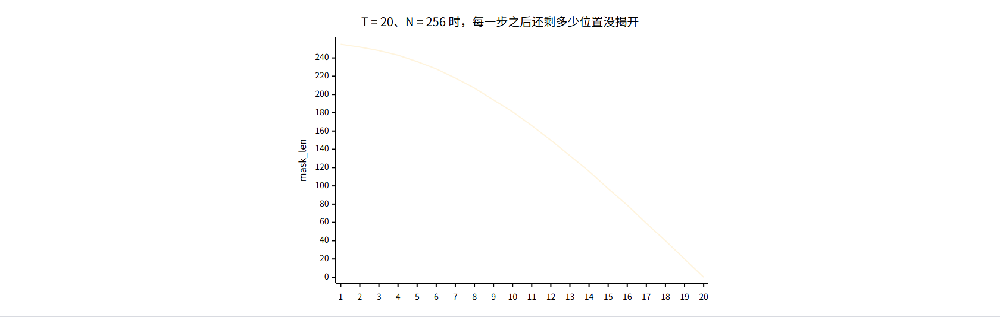
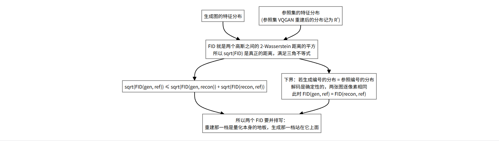
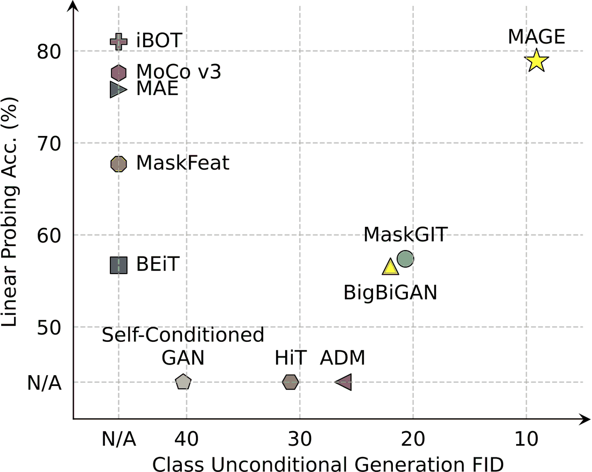
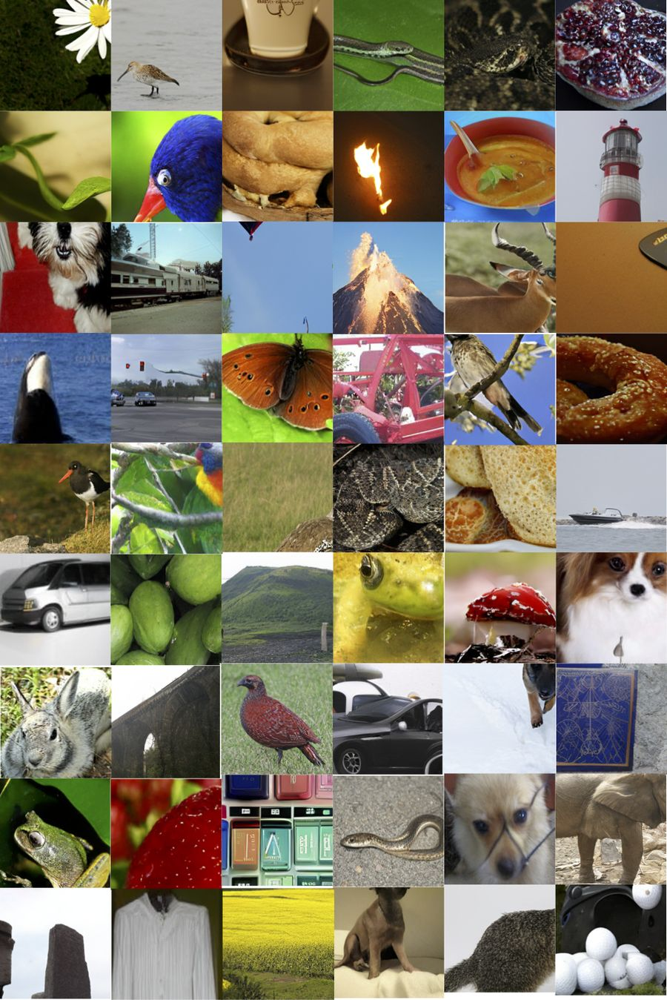

MAGE 源码逐读 · 全解篇 · 合讲 5 篇 · 结构 · 数据流 · 推导 · 结果
代码文件：models_mage.py · eval_exp.py · util/exp_*.py（结构、数据流、推导、结果）
半 A 半 B：16 × 16 的拼法
左 8×16 出自 A右 8×16 出自 B接缝两侧最容易被换成相近的编号A、B 固定为 n=2 的那两张图
系列 5 篇 · 进度
系列前两篇按文件走：第 1 篇讲 models_mage.py 怎么把编号猜回来，第 2 篇讲 eval_exp.py 怎么把生成结果变成可核对的数字。这一篇换个走法，按四条线把整个项目串一遍——模型结构、训练与推理的数据流、几处能推导清楚的理论、以及结果该怎么读。
这么走的原因是，前两篇分开看时有些东西看不出因果。比如标签平滑为什么会让点积头「换一个相近的小块」、为什么一次揭开多个位置会拼出左右对不上的图、为什么两个 FID 必须并排写——这三件事各自散在不同的文件里，但它们的答案都在同一套数学里。放在一起讲，推导才立得住。
outputs/ 在集群上），所以「结果」那一部分只写口径和清单，不编数字。models_mage.py 158–171
整个项目建立在一个替换上：把图像换成 256 个编号，后面所有事情都在编号上做。做替换的是 VQGAN 的编码器，它把 256×256 的图压成 16×16 个特征，每个特征在 1024 个词里挑最近的一个。
config = OmegaConf.load('config/vqgan.yaml').model self.vqgan = VQModel(ddconfig=config.params.ddconfig, n_embed=config.params.n_embed, embed_dim=config.params.embed_dim, ckpt_path=vqgan_ckpt_path) for param in self.vqgan.parameters(): param.requires_grad = False self.codebook_size = config.params.n_embed vocab_size = self.codebook_size + 1000 + 1 self.fake_class_label = self.codebook_size + 1100 - 1024 self.mask_token_label = vocab_size - 1
这五行把编号空间的边界定死了。逐条看：
codebook_size = 1024：一张图的编号取值是 0..1023。这个数字决定了分类头要输出多少类。vocab_size = 2025：1024 个编号之外，多出 1000 个位置留给分类任务的类别编号，最后再加 1 个专给遮盖用。多出来的 1001 个不是为了生成服务的，它们的 logits 在算生成损失时会被切掉。fake_class_label = 1100：写在序列最前面那个位置的编号。它落在类别编号区间里，和真实的 0..1023 不会碰撞，它对应的那一行嵌入是可学习的，作用等价于 BERT 的 [CLS]。mask_token_label = 2024：遮盖位置用它替换。注意它是一个合法编号，模型得学会「看到 2024 说明这里需要预测」，而不是把它当成一个普通的词。VQGAN 在构造函数里就被 requires_grad = False 冻结了，而且整个项目里它从不参与更新。这意味着像素层面的上限在训练开始前就定好了：模型再准，输出也只能是「同一张 256×256 图先编码再解码」的结果。这一句是后面 FID 那一节的地基。
位置信息由两张表提供：BertEmbeddings.position_embeddings 是可学习的 257 行表，和编号一起查表相加。文件里还有一套正弦余弦 pos_embed 和 decoder_pos_embed，它们是 MAE 骨架留下的，前向路径里不会走到。
models_mage.py 184–233
骨架是标准的两段式：编码器看一小部分位置，解码器把全部位置的编号补出来。
self.blocks = nn.ModuleList([... for i in range(depth)]) self.norm = norm_layer(embed_dim) self.decoder_embed = nn.Linear(embed_dim, decoder_embed_dim, bias=True) self.decoder_pos_embed_learned = nn.Parameter(torch.zeros(1, num_patches + 1, decoder_embed_dim)) self.decoder_blocks = nn.ModuleList([... for i in range(decoder_depth)]) self.decoder_norm = norm_layer(decoder_embed_dim)
decoder_pos_embed_learned），固定正弦余弦那一套在初始化里被填了值但前向不用。decoder_embed 一个线性层连接，维度不同时在这里对齐。
patch_embed、cls_token、pos_embed、decoder_pos_embed、mask_token、decoder_pred 这六样在 forward_encoder 和 forward_decoder 里都找不到，它们是从 MAE 继承下来的形状。读代码时被它们带偏会浪费很多时间。models_mage.py 218–233
补出编号的那一层有两种写法，用一个开关切换。这个开关是后面所有「背图还是换块」讨论的入口。
if self.linear_head: self.mlm_layer = None self.token_classifier = nn.Linear(decoder_embed_dim, self.codebook_size) else: self.mlm_layer = MlmLayer(feat_emb_dim=decoder_embed_dim, word_emb_dim=embed_dim, vocab_size=vocab_size) self.token_classifier = None
def forward(self, x, word_embeddings): mlm_hidden = self.ln(self.gelu(self.fc(x))) word_embeddings = word_embeddings.transpose(0, 1) logits = torch.matmul(mlm_hidden, word_embeddings) return logits + self.bias
关键是最后一行的权重来自哪里。调用方传进来的是 self.token_emb.word_embeddings.weight.data.detach()——分类权重就是词嵌入表本身，而且梯度不从这里回流。于是隐向量只能通过内积和词向量比较，它没有自己独立的一套类别方向。
这一句是整个项目里最有后果的一行。下一篇要推的「最优解被限制在词向量张成的空间里」，说的就是它。
self.token_classifier = nn.Linear(decoder_embed_dim, self.codebook_size)
一行。token_classifier 的 1024 行权重完全自由，不受词嵌入表的任何约束。它多出来的参数量是 1024 × decoder_embed_dim，ViT-B 上是 78 万，占总参数量的很小一部分，但它换来的是完全不同的解空间。
infer_linear_head()：先读同目录的 args.json，读不到就去权重字典里找有没有 token_classifier 开头的键。models_mage.py 266–375
这一步要同时回答两个问题：编码器看到什么，损失算在哪里。

if x.dtype in (torch.int32, torch.int64): token_indices = x.long() gt_indices = token_indices.clone() else: with torch.no_grad(): z_q, _, token_tuple = self.vqgan.encode(x) _, _, token_indices = token_tuple token_indices = token_indices.reshape(z_q.size(0), -1) gt_indices = token_indices.clone().detach().long()
浮点进来就是真图像，走 VQGAN；整数进来就是缓存好的编号，直接拿来用。后一条路是为 --cache_tokens 准备的——VQGAN 每步都要重新编码一遍同样那几张图，纯属浪费，预先算好存盘可以省掉。gt_indices 在两条路上都是原编号的副本，它是监督信号。
mask_rate = self.mask_ratio_generator.rvs(1)[0] num_dropped_tokens = int(np.ceil(seq_len * mask_ratio_min)) num_masked_tokens = int(np.ceil(seq_len * mask_rate)) while True: noise = torch.rand(bsz, seq_len, device=device) sorted_noise, _ = torch.sort(noise, dim=1) cutoff_drop = sorted_noise[:, num_dropped_tokens-1:num_dropped_tokens] cutoff_mask = sorted_noise[:, num_masked_tokens-1:num_masked_tokens] token_drop_mask = (noise <= cutoff_drop).float() token_all_mask = (noise <= cutoff_mask).float() if token_drop_mask.sum() == bsz*num_dropped_tokens and token_all_mask.sum() == bsz*num_masked_tokens: break
mask_rate 每步只抽一个标量，这一批数据共用。分布是截断正态，默认均值 0.55、标准差 0.25，截断到 [mask_ratio_min, mask_ratio_max]。num_dropped_tokens 由 mask_ratio_min 决定，和抽到的比例无关。这是编码器固定要丢掉的数量，默认 0.5 时是 128 个。num_masked_tokens 由抽到的比例决定，总是大于等于前者。两个集合是包含关系：token_drop_mask ⊂ token_all_mask。while True 就是处理这种情况的。token_indices[token_all_mask.nonzero(as_tuple=True)] = self.mask_token_label token_indices = torch.cat([torch.zeros(..., 1, device=device), token_indices], dim=1) token_indices[:, 0] = self.fake_class_label token_keep_mask = 1 - token_drop_mask input_embeddings_after_drop = input_embeddings[token_keep_mask.nonzero(as_tuple=True)] \ .reshape(bsz, -1, emb_dim)
按 token_keep_mask 把被丢掉的位置摘掉，序列从 257 缩到 257−128=129。这 129 个里面，一部分是真实编号，一部分是已经被改写成 mask_token_label 的位置——它们没有被丢掉，只是身份被藏起来了。两个掩码的差别就体现在这里：丢掉的连槽位都不占，被遮的还占着槽位。
mask_tokens = x[:, 0:1].repeat(1, token_all_mask.shape[1], 1)
x_after_pad = mask_tokens.clone()
x_after_pad[(1 - token_drop_mask).nonzero(as_tuple=True)] = x.reshape(x.shape[0] * x.shape[1], x.shape[2])
x_after_pad = torch.where(token_all_mask.unsqueeze(-1).bool(), mask_tokens, x_after_pad)三步：先把 257 个槽全填成类槽的表示；再把编码器留下的 129 个输出放回原位置；最后把 token_all_mask 为 1 的位置重新盖回填充向量。第三步处理的是「没被编码器丢掉、但属于遮盖集合」的那批位置。走完之后解码器看到的是一张对齐的 257 槽序列，可见位置是真编号，遮盖位置是填充向量。
bsz, seq_len = gt_indices.size()
loss = self.criterion(logits[:, 1:, :self.codebook_size].reshape(bsz*seq_len, -1),
gt_indices.reshape(bsz*seq_len))
loss = loss.reshape(bsz, seq_len)
loss = (loss * mask[:, 1:]).sum() / mask[:, 1:].sum()三个切片要注意：丢掉类槽那一列、只取前 1024 类（把类别编号和 mask 编号的 logits 扔掉）、然后 reshape 到和标签对齐。最后一行按 token_all_mask 加权平均，没被遮的位置不贡献损失。
理论推导 · 一
把上面这几步抽象出来，训练在最小化的是这样一个量。记编号图为 x ∈ {0..1023}^256，M 是被遮盖的位置集合，C 是编码器看得到的位置集合，q_i(v | x_C) 是模型在位置 i 上给出的分布。训练损失就是
这里的期望是对遮挡过程取的：先抽 r，再抽哪些位置进 M。标签平滑加进来之后，每一项从 −log q_i(x_i) 变成 −(1−ε)·log q_i(x_i) − ε·(1/V)Σ_v log q_i(v)，也就是把「正确答案占 100% 置信」改成「占 90%」。
这一点值得说清楚，因为它直接解释了后面的采样行为。对固定的 M 和 C，把模型在每个位置上的对数概率加起来，和整块的对数概率比一下：
左边是各位置边缘分布的对数和，右边是这一块的联合分布。不等号的方向来自熵的次可加性：H(X_M | X_C) ≤ Σ_i H(X_i | X_C)。换句话说，逐位置预测的这个目标，是在优化联合似然的一个上界——它比真正要做的事情宽松。
宽松在哪里？宽松在它不要求模型刻画 M 内部位置之间的依赖。位置 i 和位置 j 如果都在被遮的集合里，模型对它们的预测各自只看 C，互相之间不需要一致。这正是论文为什么要让解码器在每个位置上「分别」算概率。
理论推导 · 二
接着上面那个上界往下走。既然训练时就把「位置之间互相依赖」这一层省掉了，采样时自然拿不到它。采样器在每一步做的是
这是一个平均场近似：用各位置的边缘分布的乘积去代替真正的联合分布。当被遮的位置互相独立时它是对的；当它们强相关时它会失真。

把 A 的左半和 B 的右半拼成一张编号图，接缝以左全部由 A 决定，接缝以右全部由 B 决定。这是一个强相关的联合分布：知道左边是 A，右边的合理取值就被限制住了。而采样器一次从乘积分布里抽一批位置，抽的时候彼此不知道对方抽了什么，于是接缝两侧可以各自成立、合起来不成立。
一次只揭一个位置为什么好一些：抽完立刻把它变成可见，下一步的条件里就包含了它。这一步的松弛只涉及一个位置，256 步累积下来每一步都只承担一份局部误差。
|M| = 1 时乘积分布和真实分布完全一样，因为只有一个位置，不存在「互相依赖」。所以一次揭一个的位置数是理论上最干净的极限。理论推导 · 三
设某个位置的 logits 是 z ∈ R^V，正确答案是 y。平滑交叉熵可以写成
对 z 求梯度：
∂L/∂z = softmax(z) − [ (1−ε)·e_y + ε/V · 1 ]
所以如果 logits 可以任意取，最优解就是让模型分布等于平滑后的目标分布——正确答案占 1−ε，其余 1024 个词平分 ε。ε=0.1 时答案占 0.9，剩下每个约 0.0001。
关键在于 logits 不能任意取。分类头的写法决定了 z 和隐向量 h 之间是什么关系，而不同的头给出完全不同的解空间。这就是下面两节要分开推的原因。
理论推导 · 四
点积头的 logits 是 z_v = h · w_v，其中 w_v 是第 v 个词的嵌入向量，h 是解码器输出的隐向量。把 z = W h 代进上一节的损失，对 h 求梯度：
∂L/∂h = W^T ( softmax(W h) − t ) 其中 t = (1−ε)·e_y + ε/V · 1
令它等于零。记 p = softmax(z) 是模型给出的分布，w̄ = (1/V) Σ_v w_v 是全部词向量的平均，一阶条件整理成：
这个式子的读法是：模型用自己的概率去加权平均词向量，得到的那个向量必须等于「正确答案向量与全体平均值的一个固定混合」。隐向量 h 本身被消掉了——它只充当一个中间量，真正被约束住的是输出分布的矩。

如果 1024 个词向量两两正交（同时 w̄ 落在它们的张成空间里），满足上面这个向量等式的分布是唯一的：把 t 按正交基分解，得到的系数就是 p。此时 p 正好等于平滑后的目标分布，最大概率落在 y 上，argmax 不会错。
但 VQGAN 的码本是学出来的，相邻的块本来就相似，词向量之间存在明显的相关性。这时上面那个向量等式有多组解：把一部分概率从 w_y 挪给另一个和它方向接近的 w_{y'}，加权和几乎不变，等式仍然近似成立，而 argmax 已经换人了。
这就是「换相近的小块」的完整机制。它需要两个条件同时成立：标签平滑把一部分概率强制分出去（ε > 0），以及词向量之间存在相关性（VQGAN 码本天然如此）。少任何一个，argmax 都会老老实实停在正确答案上。所以这个现象只在「点积头 + 标签平滑」这一格里容易出现。
把它和第 1 篇里那四种组合对照一下，预测就很清楚：
ε=0）：目标是 Σ p_v w_v = w_y。正交时唯一解是 e_y；有相关时虽然也有多解，但没有「必须分出去」的那部分概率，argmax 更容易停在 y 上。U 自由，可以把 y 的分数抬到任意高，精确记住编号。U 仍然自由，虽然目标分布被摊开了，但把 y 的分数抬到最高这件事不受影响，argmax 依然可以是正确答案。理论推导 · 五
独立分类头的 logits 是 z = U h，U 是一个 1024 × D 的自由矩阵，每一行不受其他行约束，也不和词嵌入表共享。从优化的角度看，差别在于可行域：
z 只能落在 {W h : h ∈ R^D} 这个 D 维子空间里。要实现的分布 t 未必在这个子空间里。z 可以取 R^1024 里的任何值——取 U = I、h = z 即可，只要 D ≥ 1024；D < 1024 时也能通过一个线性映射覆盖足够的方向。可行域不受限的直接后果：上一节那个「矩必须等于某个固定混合」的等式消失了。线性头可以把正确答案的分数抬到任意高、把其余类的分数压到任意低，平滑项只会让整个分布被摊开一点，但摊开之后最大概率仍然在正确答案。
ε = 0 时线性头的目标就是一个 one-hot，它可以把 y 的 logit 做到远高于其他类，等价于把训练集的编号整张记住。ε = 0.1 时目标变成 (0.9, 0.0001, 0.0001, …)，要 argmax 正确只需要 z_y > z_v 对所有 v ≠ y 成立，这件事和「概率被摊开」并不矛盾。
理论推导 · 六
采样循环里，第 t 步之后还剩多少位置没揭开，由这个式子决定：
它同时受两道夹取：上限是 sum(unknown) − 1（这一步至少得揭掉一个），下限是 1（至少给下一步留一个）。把 N=256、T=20 代进去，得到的数是
[255, 252, 248, 243, 236, 228, 218, 207, 194, 181, 166, 150, 133, 116, 97, 79, 59, 40, 20, 0]
把 cos(π/2·u) 看成 u ∈ [0,1] 上的函数，它在这个区间上是凸的（二阶导为负），导数 −π/2·sin(π/2·u) 从 0 单调走到 −π/2。导数就是「每步揭掉的比例」：
正弦在 [0, π/2] 上单调递增，所以每一步揭开的数量是单调增加的。开头几乎不动，结尾一次揭掉一大片。实际算出来的每步新揭开数是
1, 3, 4, 5, 7, 8, 10, 11, 13, 13, 15, 16, 17, 17, 19, 18, 20, 19, 20, 20
整体趋势是递增的；floor 取整会带来个别位置上的抖动（第 16 步比第 15 步少一个），连续形式是严格单调的。
这个形状和「模型知识的积累方式」是相配的：开头几乎没有已知位置，模型的信息最少，一次揭太多位置的风险最大；越到后面已知位置越多，条件越来越充分，一次揭一批才安全。和平均场那一节的说法合起来看，每步揭的数量决定了这一步要承担多少「互相依赖被忽略」的误差，余弦调度把这份误差摊成了前小后大。
理论推导 · 七
FID 的定义是两个特征分布之间的距离。记拟合出来的高斯为 N(μ, Σ)，Fréchet 距离是
这个表达式不是随手拼的：它正好等于两个高斯分布之间的 2-Wasserstein 距离的平方。这一点有两个直接后果。
W₂² 的平方根 W₂ 是度量空间上的距离，满足三角不等式。于是
换句话说，FID 本身不能相减：FID(gen, ref) − FID(recon, ref) 没有一个通用的分解含义。能写出来的只有上面那条开平方之后的三角不等式。

解码是确定性的：给定编号，get_codebook_entry 加 vqgan.decode 得到唯一的图。所以如果生成出来的编号分布和参照集的编号分布完全一样，那么两边的图像分布也完全一样，此时
这个等号是严格的，不是近似。metrics.json 里那个 'tokens_exact_equals_vqgan_recon': True 说的就是它。也正是为什么两个 FID 必须并排写：重建那一档是量化本身能达到的最好结果，生成那一档只能站在它上面，两者之间的距离才是模型的事。
还有一件事要提醒：这个「地板」只在生成编号复现了参照编号时才严格成立。模型的编号分布和参照的编号分布不同时，两组图像的分布也会不同，两者之间的差既包含「编号没猜对」，也包含「解码之后放大或缩小了这种差别」。
理论推导 · 八
这两个指标把「生成得像不像训练集」换成了一个可以有向度量的东西。先定义两张编号图之间的距离：
就是逐位不等的比例，256 维上的归一化 Hamming 距离。两个指标都是它的极值：
x，求 min_g d(x, g)。等于 0 的比例叫完全覆盖，小于等于 16/256 = 6.25% 的比例叫大致覆盖。它回答「训练集里有多少张能在生成结果里被找到」。g，求 min_x d(g, x)。对所有生成图取平均。它回答「生成出来的东西离训练集有多远」。两个方向测的不是同一件事。覆盖率只看训练集那一侧，即使生成集里只有 1000 张图、张张都在复现训练样本，只要训练样本足够少，覆盖率也能很高。匹配误差只看生成集那一侧，即使生成集把 256 维空间里的一大片都铺开了，只要每张都离某个训练图不太远，这个数也不大。
放在一起读才有意义：
1024^256 的搜索空间里要精准命中几个点并不难。完全覆盖要求生成集里存在一张图，256 个编号全部和某张训练图相同。生成张数是 |G|，而编号空间的规模是 1024^256；即使模型把分布学得很准，单张图被精确复现的概率仍然极低。所以 README 第 2.2 节才会说「大 n 完全覆盖可以接近 0，大致覆盖和匹配误差仍要报」——前者失去分辨力，后者还有。
直接算需要 |T| × |G| × 256 次比较。n=1000 时要拿 50000 张生成图对 1000 张训练图，是 1.28 × 10¹⁰ 次整数比较；n=10000 时放大十倍。代码里用两层分块（q_batch=32、g_batch=4096）把中间张量的体积压住，这只是内存上的处理，算术总量没有减少。
eval_exp.py 285–359
推理和训练最大的不同有两条：编码器不再丢位置，损失也不存在了。

token_all_mask = token_indices == mask_token_id token_drop_mask = torch.zeros_like(token_indices)
这两行是推理路径的起点。生成时没有任何位置被丢掉，token_drop_mask 是全零张量，所以编码器看到的是类槽加全部 256 个位置。被遮的位置仍然以 mask_token_label 的身份留在序列里。
循环体里每步要做的事，第 2 篇已经逐行拆过，这里只把两套循环的形状放在一起看：
cosine：每步把所有未知位置一起预测，再按置信度遮回一批。遮回的数量由余弦调度决定。已经猜对的位置可能被重新遮住。uncover1：每步只把最有把握的那一个位置定下来，落子即固定。最多 256 步，未知清空就提前退出。两者的每个位置仍然各自算概率，差别只在揭开的次序。结合平均场那一节：cosine 每步要一次定下一批位置，这批位置之间没有互相依赖；uncover1 每步只承担一个位置的松弛。
README 第 4.3 节专门写了一句：论文默认的 12 步生成会把已经猜对的位置再遮回去，那不是半 A 半 B 实验。原因是重遮会让「接缝周围的替换发生在哪一步」变得不可观察——一批位置被遮掉再重新预测，你看不出新的取值是因为条件变了还是因为噪声换了。
eval_exp.py 全文
把第 2 篇流水线图重新放一遍，因为这一篇要谈结果，得先知道每个数字是谁算的。

train_tokens.npy：训练集的编号，逐批编码得到，存在盘上。n=10000 时是 10000 × 256 的整数数组，十几兆。train_vqgan_recon/：训练图的 VQGAN 重建，一张一张写盘。它是像素口径匹配误差的基准，也是拼图第三列。gen/*.png 与 gen_tokens.npy：生成结果的两份表示。图用来算 FID，编号用来算覆盖率与匹配误差。grid.png：三列拼图，用最近邻下标配对。metrics.json：以上全部汇总，写之前先过一遍字段校验。有一条容易忽略的设计：评测既可以自己生成，也可以指向现成的生成目录（--gen_dir）。后者会先试着读同目录的 gen_tokens.npy，读不到才把图片重新编码一遍。这样同一次生成可以拿去做多种比较，不必重跑采样。
models_vit_mage.py / main_linprobe.py
生成这条线之外，MAGE 还把同一套预训练权重拿去做分类。做法是复用词嵌入和位置嵌入，把编码器换成 timm 的 ViT，再加一个分类头。
main_finetune.py 全参数更新，带逐层学习率衰减（--layer_decay）和 mixup / cutmix。论文在 ImageNet-1K 上 ViT-B 报 82.5%。main_linprobe.py 冻结主干，只训一个线性头，头前面加一层 BatchNorm1d。优化器用 LARS。论文报 ViT-B 74.7%。两条路共用的部分是池化方式：默认 --global_pool 会丢掉类槽、对 256 个位置取平均再过 fc_norm；加上 --cls_token 就改成取第 0 个位置。这个选择在生成任务里没有对应物，是纯分类的接口。
README.official.md
先把参照系摆出来。论文在 ImageNet-1K 上、256×256 分辨率、类无条件生成的成绩是：
这四个数字里，前两个是生成，后两个是表示学习。论文的卖点是这两件事在同一个模型里同时做到——下图就是那张主张的证据：横轴是生成 FID（越靠右越小越好），纵轴是线性探测准确率，MAGE 落在右上角，是唯一一个两侧都不落后的点。

下面这张是论文给出的类无条件生成样例，用来看「图像质量」这个指标在论文语境里是什么意思。

README 第 2.1 / 4.5 节
本仓库跑的实验和上面那组数字不是同一个实验，这件事在 README 里被反复强调，理由有三个。
Resize(256, BICUBIC) + CenterCrop(256) 放大到 256。放大这一步本身会引入模糊和块状伪影，FID 分布和原生 256×256 的图完全不同。pytorch-fid 的 calculate_fid_given_paths（TF Inception 2015-12-05，2048 维），和 LGANs-TT 的 realdata.py 一致；论文的官方评测命令用的是 torch-fidelity。两边主干网络同为 Inception，但预处理和版本差异会带来小数级别的偏移。合并起来读：metrics.json 里 source.fid_comparable_to_paper 这个字段永远是 false，Tiny 上的 FID 不能和 11.1 比。它只能在本实验内部横向比：同一个 n 下的不同设置之间、同一个设置下的不同 n 之间。
0.5-1 与 0-1 两种遮挡分布在同一个 n 上的差别。顺带说一下 n=10000 那一档：它要生成 50000 张图，和论文的生成张数一致，是唯一一档在「图数」上对齐的配置。要对齐的只有图数，数据本身仍然不同。
README 第 5 节
结果数字不在这个仓库里——训练和评测都在集群上跑（bsub 提交，只用 V100），结果写在集群的 outputs/<实验名>/n<N>/ 下。仓库里的 README.md 第 5 节维护的是一张完成清单。
打勾的项：每个 n 用哪些图已经写死（splits/n<N>.txt 加 manifest.json），评测脚本统一为 eval_exp.py，VQGAN 重建 FID 和生成 FID 走同一个 fid_two_folders()，采样参数写进 metrics.json。
lin_nosmooth（按第 4.1 节的例外条款），已完成。lin_nosmooth，待训评结束。*50000：本段没跑，清单里注明不用小 n 冒充。半 A 半 B（阶段 2）、训练测试遮挡对齐（阶段 3）、按 n 核对指标（阶段 4）、大 n 泛化（阶段 5）、量化误差与论文可比性（阶段 6）都还没勾选。其中阶段 6 里的 ImageNet-256 部分注明「没做就写明」，因为要复现 11.1 那个比较需要完整的 ImageNet-256 验证集，仓库里 prepare_imgnet_val.py 准备好了脚本，数据本身没准备。
README.md，是那份文件的勾选情况，不是我从结果文件核出来的——结果文件不在本仓库。mask_ratio_min 比例的位置，解码器拿回全部 257 个槽；两个掩码是包含关系。推理时一个位置都不丢。Σ p_v w_v = (1−ε)w_y + ε w̄。标签平滑强制分出一部分概率，码本向量之间又存在相关性，两个条件合起来才让 argmax 可能离开正确答案。独立头因为可行域不受限，两个条件都不受约束。fid_comparable_to_paper 永远是 false，只能在本实验内部横比。图 1 · 模型骨架：图像只在 VQGAN 里出现一次
flowchart TD
IMG["图像 (B, 3, 256, 256)"]
VQ["冻结 VQGAN.encode<br/>16×16 下采样 + 1024 词表量化"]
TOK["256 个编号，(B, 256)<br/>取值 0..1023"]
EMB["BertEmbeddings<br/>词嵌入 (2025, D) + 可学习位置嵌入 (257, D)"]
PRE["前置类槽<br/>编号 = fake_class_label = 1100"]
ENC["编码器 12 / 24 × Block<br/>见到的只有类槽 + 保留下来的位置"]
DEC_IN["decoder_embed: D → D'<br/>加 decoder_pos_embed_learned"]
DEC["解码器 8 × Block"]
HEAD{"分类头"}
DOT["MlmLayer 点积头<br/>fc → gelu → ln，再与 detach 的词嵌入做内积"]
LIN["token_classifier<br/>Linear(D', 1024)，自由权重"]
LOG["每个位置 1024 个编号的分数"]
IMG --> VQ --> TOK --> EMB --> PRE --> ENC --> DEC_IN --> DEC --> HEAD
HEAD --> DOT --> LOG
HEAD --> LIN --> LOG图 2 · 预训练一步：从图像到损失
flowchart TD
X{"输入 dtype"}
F["浮点：走 vqgan.encode<br/>no_grad，不产生梯度"]
I["整数：已经是缓存编号<br/>--cache_tokens 时走这条"]
TOK["token_indices (B, 256)<br/>gt_indices = 原样复制当监督"]
R["抽一个遮挡比例<br/>r ~ truncnorm(mu=0.55, sigma=0.25)<br/>截断到 [mask_ratio_min, mask_ratio_max]"]
N1["num_drop = ceil(256 · mask_ratio_min)<br/>至少丢这么多"]
N2["num_mask = ceil(256 · r)<br/>至少遮这么多"]
S["noise = rand(B, 256)，排序后取第 k 小值当阈值<br/>恰好选中 k 个位置"]
DM["token_drop_mask ⊂ token_all_mask"]
REPL["token_all_mask 位置的编号改写成 mask_token_label"]
CAT["前置类槽，长度 257"]
BERT["token_emb"]
KEEP["按 keep = 1 - drop 挑出保留位置<br/>(B, 129, D)"]
E["12 / 24 × Block + LayerNorm"]
D["forward_decoder：回填位置 → 8 × Block"]
LOSS["forward_loss<br/>只对 token_all_mask 位置求平滑交叉熵"]
X -->|浮点| F --> TOK
X -->|整数| I --> TOK
TOK --> R --> N1 --> S
R --> N2 --> S
S --> DM --> REPL --> CAT --> BERT --> KEEP --> E --> D --> LOSS图 3 · 推理：两套采样循环，只是揭开次序不同
flowchart TD
START["token_indices 全部 = mask_token_label<br/>256 个位置都看不见"]
S1["每步：拼类槽 → token_emb → 编码器 → 解码器<br/>drop_mask 全 0，编码器一个位置都不丢"]
S2["logits[:, 1:, :1024]"]
BR{"--argmax ?"}
A1["argmax，取最大概率"]
A2["Categorical(...).sample()，按概率抽"]
KEEP["已知位置用 cur_ids 覆盖回去<br/>where(unknown_map, 新预测, 旧编号)"]
SCH{"--schedule"}
C1["cosine：mask_ratio = cos(π/2 · ratio)<br/>按置信度批量遮回"]
C2["uncover1：只定最把握的 1 个位置<br/>落子即固定，绝不重遮"]
END1["循环结束，用 sampled_ids"]
END2["未知清空或走满 256 步"]
DEC["get_codebook_entry → vqgan.decode"]
IMG["生成图 (B, 3, 256, 256)"]
START --> S1 --> S2 --> BR
BR -->|是| A1 --> KEEP
BR -->|否| A2 --> KEEP
KEEP --> SCH
SCH -->|cosine| C1 --> END1
SCH -->|uncover1| C2 --> END2
END1 --> DEC
END2 --> DEC
DEC --> IMG图 4 · 评测流水线：一张 metrics.json 的来路
flowchart LR
subgraph IN["输入"]
N["n 与子集列表<br/>splits/n<N>.txt"]
CK["checkpoint<br/>args.json 里还有是哪种头"]
end
subgraph ENC["编码训练集"]
T["train_tokens.npy<br/>(Nt, 256)"]
TR["train_vqgan_recon/<br/>逐批写盘，不留在内存"]
end
subgraph GEN["生成"]
G["gen/*.png<br/>gen_tokens.npy"]
end
subgraph MET["指标"]
NN["双向 Hamming 最近邻"]
COV["覆盖率 exact / approx"]
ME["匹配误差：编号比例 + 像素 MSE"]
GR["grid.png：gen / train / vqgan 三列"]
OS["oneshot 对训练图猜对多少"]
FID["FID：生成 vs 参照、重建 vs 参照"]
end
OUT["outputs/<exp>/n<N>/metrics.json"]
N --> ENC
CK --> GEN
T --> NN
G --> NN
NN --> COV
NN --> ME
TR --> ME
NN --> GR
TR --> GR
CK --> OS
GEN --> FID
COV --> OUT
ME --> OUT
GR --> OUT
OS --> OUT
FID --> OUT图 5 · 为什么一次揭多个会拼出接不上的图
flowchart TD
TRUE["真实条件分布<br/>p(x_M | x_C)<br/>M 内部的位置互相依赖"]
MF["采样器实际用的分布<br/>Π_i q_i(x_i | x_C)<br/>每个未知位置独立抽"]
GAP["两者的差就是「产品分布」的松弛<br/>接缝两侧对不上，就来自这里"]
WAY1["一步揭 k 个：一次从 Π q_i 抽 k 个<br/>抽完之前互不知道对方抽了什么"]
WAY2["一次揭 1 个：抽完立刻变成可见<br/>下一步的条件已经包含它"]
RES1["k 越大，松弛越大<br/>整片区域一次成型的难度越高"]
RES2["256 步走完，每一步都只承担 1 个位置的松弛"]
TRUE --> GAP
MF --> GAP
GAP --> WAY1 --> RES1
GAP --> WAY2 --> RES2图 6 · 两种分类头在最优解处的差别
flowchart LR
subgraph DOT["点积头：z_i = h · w_i"]
D1["可调的自由度只有 h"]
D2["一阶条件：Σ_v p_v · w_v = (1-ε)·w_y + ε·w̄<br/>模型的期望词向量 = 平滑后的目标词向量"]
D3["若 {w_v} 两两正交：唯一解就是平滑后的分布<br/>最大概率仍然落在正确答案"]
D4["码本向量彼此相关时：<br/>把概率挪给邻近的 w_y' 也能满足同一个条件<br/>argmax 可能离开正确答案"]
D1 --> D2 --> D3 --> D4
end
subgraph LIN["独立分类头：z = h U^T"]
L1["U 自由，1024 行各自独立"]
L2["可以精确实现任意目标分布<br/>包括把正确答案的分数抬到最高"]
L3["ε = 0 时可以整张背下来"]
L1 --> L2 --> L3
end图 7 · mask_len = floor(256 · cos(π/2 · (step+1)/num_iter))
xychart-beta
title "T = 20、N = 256 时，每一步之后还剩多少位置没揭开"
x-axis ["1", "2", "3", "4", "5", "6", "7", "8", "9", "10", "11", "12", "13", "14", "15", "16", "17", "18", "19", "20"]
y-axis "mask_len" 0 --> 256
line [255, 252, 248, 243, 236, 228, 218, 207, 194, 181, 166, 150, 133, 116, 97, 79, 59, 40, 20, 0]图 8 · 两个 FID 的关系：地板与三角不等式
flowchart TD
G["生成图的特征分布"]
R["参照集的特征分布<br/>(参照集 VQGAN 重建后的分布记为 R')"]
W["FID 就是两个高斯之间的 2-Wasserstein 距离的平方<br/>所以 sqrt(FID) 是真正的距离，满足三角不等式"]
TRI["sqrt(FID(gen, ref)) ≤ sqrt(FID(gen, recon)) + sqrt(FID(recon, ref))"]
FLOOR["下界：若生成编号的分布 = 参照编号的分布<br/>解码是确定性的，两张图逐像素相同<br/>此时 FID(gen, ref) = FID(recon, ref)"]
READ["所以两个 FID 要并排写：<br/>重建那一档是量化本身的地板，生成那一档站在它上面"]
G --> W
R --> W
W --> TRI
W --> FLOOR
TRI --> READ
FLOOR --> READ